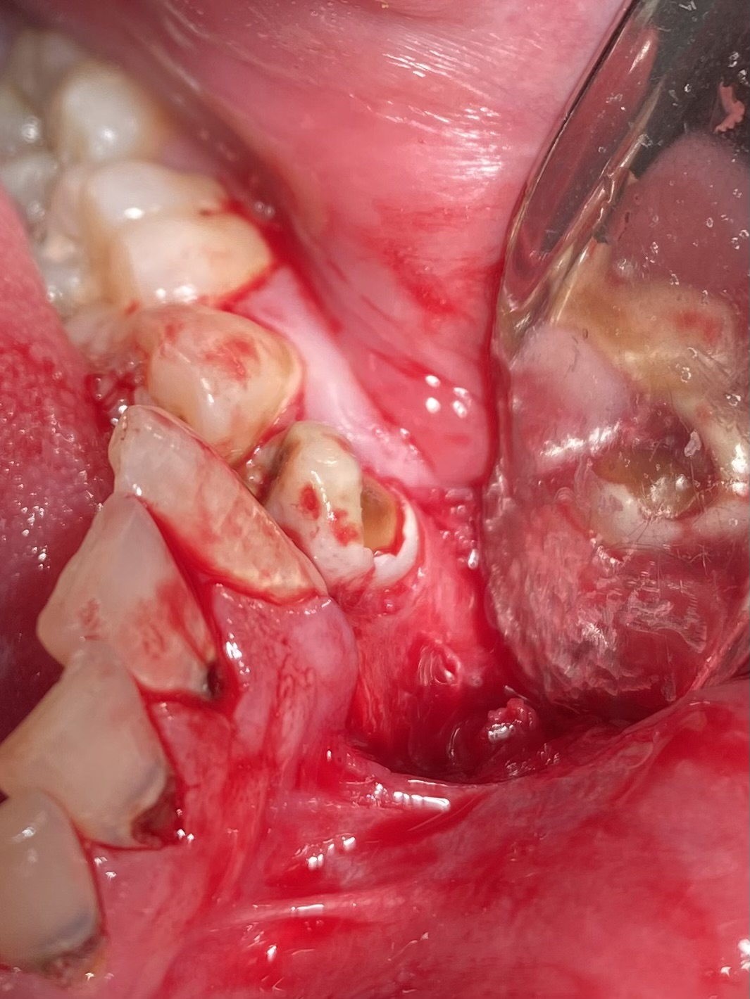
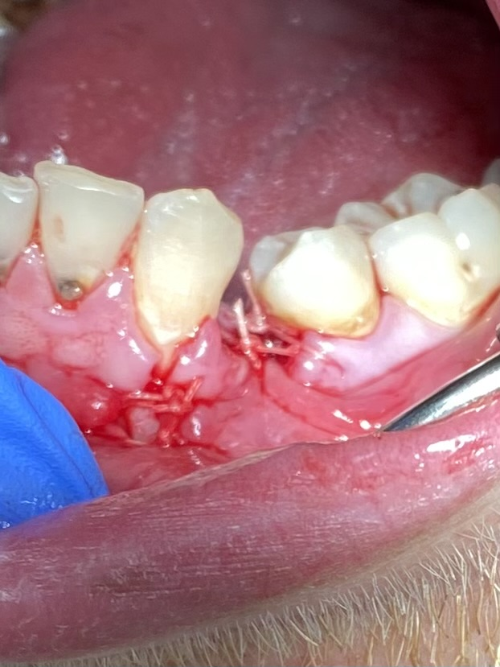

34 Surgical Extraction - March 22, 2023
A 22 y/o male with a background of bowel obstruction which was partially removed on 2021, attended for a painful 34.
On examination, 34 was grossly carious on buccal, and was diagnosed with irriversible pulpitis and symptomatic apical periodontitis, the decision of extraction was made. However, the 34 was in infraocclusion with severely mesially drifted 35 blocking the extraction pathway. Surgical extraction was planned with consent form signed by the patient.
On the surgical appointment, the LHS IAN nerve, long buccal nerve and lingual nerve was anaesthetised. Flap was raised from 33D to 35M with incision along gingival margin and a single releasing arm at 33dis. Buccal gutter was placed for 3mm at mesbuc of 34, tooth was luxated at mesial and distal of 34, movement achieved, however was not able to deliver due to impaction. Crown was sectioned horizontally at mid-height. Care was taken to avoid iatrogenic damage to adjacent teeth surfaces.
Periosteal flap was raised further towards mid buccal of 35 for better access, during this process, a round indentation 2mm in diameter was revealed, appx 4-5mm below 35 CEJ. Bar indentation, has normal appearance of bone. No significant bleeding, no whiteness visible that would indicate nerve branch from the indentation.
Differential diagnosis:
- Normal variation of bone
- Accessory mental foramen
- Mental formen with unusually high placed location (however no bleeding/no nerve tissues visible).
Buccal bone removed for 2mm further to create extraction pathway from buccal. No involvement of 34/35 circular area during guttering. Tooth was delivered with forceps buccally, in entirety. Checked socket, no loose bone fragments, Gelatamp *2 packed into socket to aid in healing, 4 simple interrupted suture with Vicryl 3-0 were palced for primary closure. Haemostasis achieved.

Patient was informed with this finding (re indentation), referral for OPG and a review appointment in 2/7 were made. Post-op instructions re self-monitoring for any lip numbness, taking NSAIDS and Vitamin B complex plus regular extraction instructions were to follow in the meantime. If parasthesia occurs, a referral to the OMFU will be made.
Patient retured for review in 2/7, tissue healing was as expected, patient reported no prolonged anaesthesia or tingling feeling within the area. Checked and compaired lower lip and chin sensation on both side, patient reported similar sensations. OPG not obtained, patient was discharged.